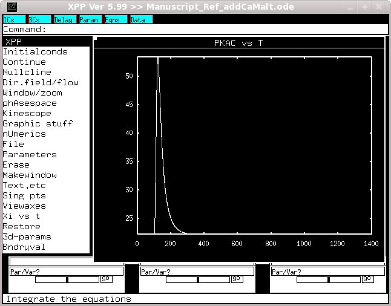
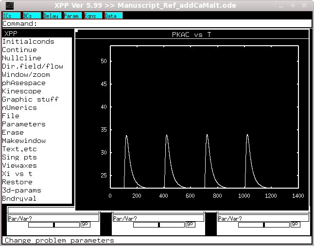

This is the readme for the model associated with paper: Kim et al. PLoS Comp Biol 2010 (Models of Second Messenger Pathways in CA1 pyramidal cell) Recreating traces for figure 2A in the paper: To run this xpp (see http://www.math.pitt.edu/~bard/xpp/xpp.html for downloading xpp) model in linux download and extract this archive, then in the new folder type xppaut Manuscript_Ref_addCaMalt.ode Select InitalConds -> (G)o. After a while the simulation will complete. Select Xi vs t and enter PKAc. You should then see a graph like  If you then change t2 to 400, t3 to 700 and t4 to 1000 you should get the next trace if you plot PKAc. The changes can be made either by selecting Parameters and entering them by hand (enter a blank line when complete and then select Initalconds -> (G)o) or by uncommenting line 16 in the code and commenting line 18 and restarting the simulation. When complete you should see a figure like  The two simulations that are run to generate these figures also produce the data for Figures 2B (molecule Qact), 5B1 and B2 (molecule cAMP). Figure 5A1 and A2 are produced by adding up AC1Cam, AC1CamATP, and ECamATP. Figure S4A can be produced by plotting Qact for the simulation run with 300 s intertrial interval (used for Figure 2B) and then repeating that with cam_rate = 0. This model was contributed by Dr K.T. Blackwell